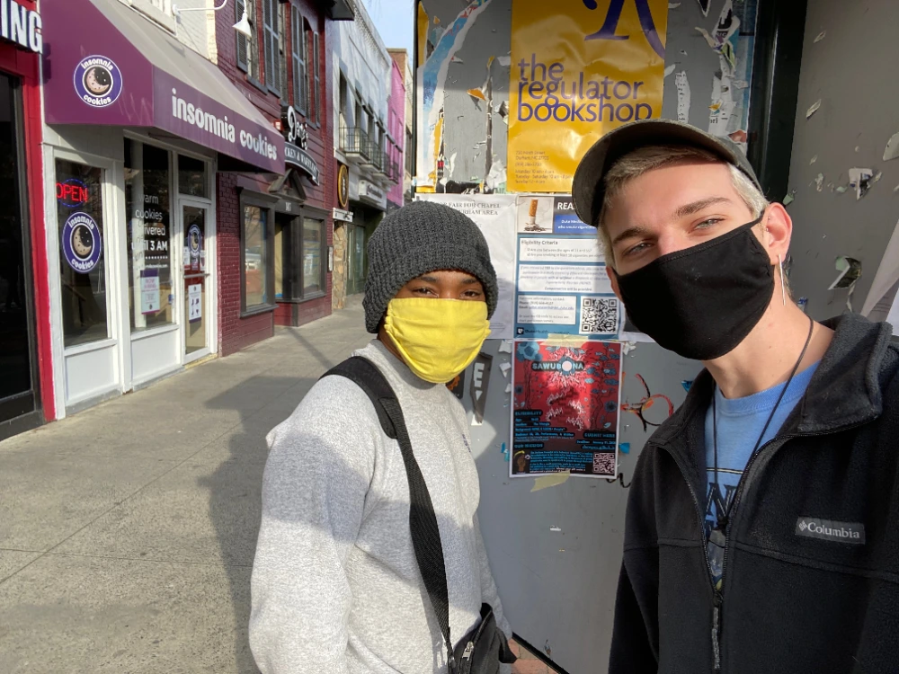

DurmPAC's inaugural project began in 2020 as the result of a visionary community member's work in bringing together six other people to form an art collective that serves youth in our home city of Durham. We responded to the events of 2020, from the empowering to the unnerving, with a goal to nurture our community and the young people that are shaping its future.
We began with Sawubona, a zine that invited youth artists to explore the relationship between comfort and power. As a collective, we designed the curatorial call and promotional materials, and began building a network of connections to youth artists in the triangle area. One of our more rewarding afternoons was spent connecting with local business owners by going door to door with flyers.
After our submission deadline closed, collective members served as a selection panel to curate nine pieces to be featured in the zine. DurmPAC produced two editions of the zine: a physical edition in print and a digital edition that lives on the web. Once the zines were all printed, we hosted a launch party for the featured artists, enjoying a sunny afternoon of snacks, skating, and hanging out in the park.
click here to see Sawubona: the digital edition! return to homepage